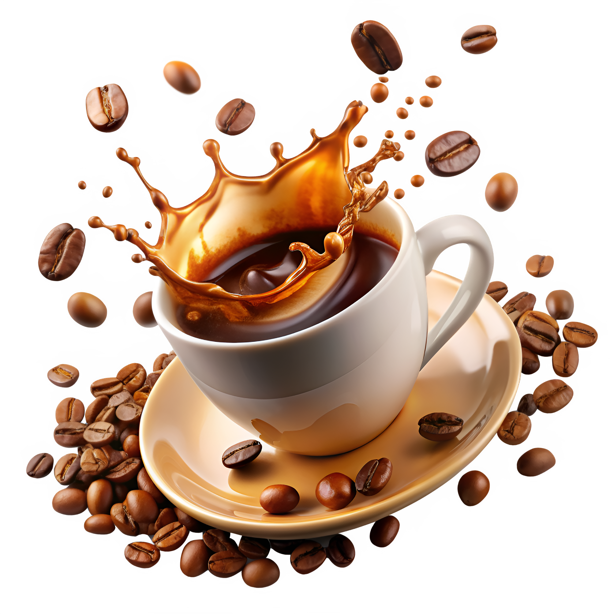

Secangkir kopi, untuk memulai hari dengan lebih berarti.
Biji kopi pilihan yang disangrai segar untuk menghadirkan aroma dan rasa terbaik di setiap tegukan.

Kenapa ngopi di sini?
Kopi dengan Karakter
Setiap biji memiliki karakter rasa yang berbeda. Temukan kopi yang sesuai dengan selera dan mood-mu.
Tempat untuk Berhenti Sejenak
Ruang yang nyaman untuk menikmati kopi, bekerja, membaca, atau sekadar melepas penat.
Teman Secangkir Kopi
Nikmati pilihan pastry dan makanan ringan yang cocok untuk menemani setiap tegukan kopi.
Tentang Kami — Lebih dari Sekadar Secangkir Kopi
Kami percaya bahwa kopi bukan sekadar minuman, tetapi bagian dari
momen yang membuat hari terasa lebih berarti. Dari biji kopi pilihan
hingga suasana yang nyaman.
kami menghadirkan tempat untuk menikmati kopi dengan cara yang
sederhana dan menyenangkan. Baik untuk memulai pagi, bertemu dengan
teman, menyelesaikan pekerjaan, atau sekadar menikmati waktu sendiri,
kami selalu punya tempat untukmu.